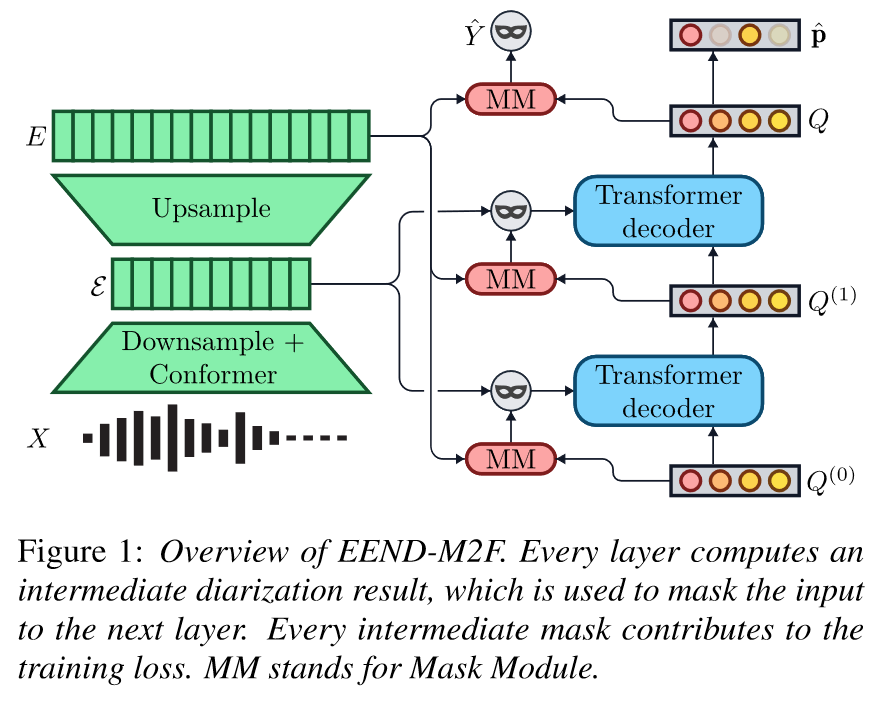

flowchart LR
X["X\n(T', D')"]:::vector --> conv1[conv1]:::module
conv1 --> a1["(T, D')"]:::vector
a1 --> conf[conformers]:::module
conf --> E1["E'\n(T, D)"]:::vector
E1 --> conv2[conv2]:::module
conv2 --> E2["E\n(T', D)"]:::vector
classDef module fill:#f99,stroke:#333,stroke-width:4px;
classDef vector fill:#ddf,stroke:#88d,stroke-width:2px,stroke-dasharray: 10 4;
Introduction
EEND-M2F: Masked-attention mask transformers for speaker diarization 📃 — by Marc Härkönen, Samuel J. Broughton, Lahiru Samarakoon, Interspeech 2024
This paper proposes a “novel” architecture for speaker diarization (actually applies Mask2Former from image segmentation to speaker diarization, which turns out to be a good idea) and claims some very strong results, most notably state-of-the-art diarization error rate on:
- AISHELL-4: 13.2 -> 13.2 (nice enough)
- AliMeeting (far): 23.3 -> 13.2 (!)
- AliMeeting (near): 22.59 -> 10.45 (!)
- RAMC: 13.58 -> 11.1 (it seems everyone is stuck at 11.0 or 11.1 nowadays though)
- DIHARD-III : 16.76 -> 16.07 (!)
(as well as some disappointing results on some datasets, until someone fixes the problem by next Interspeech)
And probably the most important part of this paper is that it returns to a pure end-to-end approach to speaker diarization, while being VERY VERY fast with a 5700 real-time factor (158 hours in 100 seconds). Being end-to-end means it requires quite a bit of memory to process long files (= intractable for very long files), but if that ever happens, it’s always possible to plug these models into an existing “hybrid” pipeline such as pyannote.audio to process the file in chunks.
I won’t speed too long on the intuition or results since I’m mostly interested in explaining how it works. But the main idea is to consider speaker diarization as an object segmentation task. Usually (in vision), this means predicting N masks of the image for N classes of objects, to mask the corresponding objects on the image. Diarization turns out to be a form of object segmentation, where each speaker is an object class, and the image is actually a 1D waveform.
Here is an attempt at a detailed breakdown of the paper to make it easy to implement (and so that I can read this again when my knowledge on this paper evaporates in one week). I have no interest in analyzing the results, the paper does that better than me. But what the paper doesn’t have is unlimited space to put wastefully detailed figures >:)
(Hopefully I’m not making huge mistakes)
Architecture

The original paper contains a rather clear figure overview of what’s happening. But let’s unfold the process step by step.
Feature extraction
Nothing fancy happens there, this is the part in green in the figure.
First we extract D' basic features from a waveform at a certain resolution, this gives us our original input tensor X: (T', D').
X is then downsampled using convolution to obtain a (T, D')-shaped tensor (in the paper, T=T'/10), that is then passed to (6) conformers. This gives E': (T, D) (\(\mathcal{E}\) in the paper) that has a lower temporal resolution and a higher number of dimensions.
Finally, we upsample E' with another convolution layer to obtain E: (T', D) that has a higher temporal resolution (same as X) but still more features.
The paper chooses D=256 but doesn’t elaborate on the choice, with Mel-features of size D'=25 of stride 10ms and window size 25ms.
To summarize this part:
Queries and transformer layers
The architecture is centered around “queries”, called like that because they are passed as queries to the transformer layers of the architecture (surprise). Those transformers are also called “query modules” since they generate a new query (for the next transformer to ingest).
The model contains a learnt initial query tensor Q0: (N, D) (randomly initialized at model creation). The model contains a certain number L of Transformer layers. Each layer receives a query \(Q_i\) and outputs a query \(Q_{i+1}\), so we will obtain Q1, Q2, …, QL after each layer. At inference, the speaker diarization output will only be determined from the very last query QL (the others are discarded).
The N from the dimension is an hyperparameter that determines the maximum number of supported speakers. The paper chooses N=50 which should be more than enough (and curiously yields better results than 25 or 75). Each of the N queries in the query tensor maps one speaker to some relevant dimensions.
Now if we want to summarize the process this is what happens:
flowchart TD
Q0["Q0\n(N, D)"]:::vector --query--> tr1[Transformer1]:::module
M1["Mask #1\n(N, D)"]:::vector --attn mask--> tr1
tr1 --> Q1["Q1\n(N, D)"]:::vector
Q1 --query--> tr2[Transformer2]:::module
M2["Mask #2\n(N, D)"]:::vector --attn mask--> tr2
tr2 --> Q2["Q2\n(N, D)"]:::vector
Q2 -. "..and so on.." .-> trL[TransformerL]:::module
ML["Mask #L\n(N, D)"]:::vector --attn mask--> trL
trL --> QL["QL\n(N, D)"]:::vector
QL -.Mysterious additional step.-> diar["Diarization output\n(T, S)"]:::vector
E1["E'\n(T, D)"]:::vector --key & value--> tr1
E1 --key & value--> tr2
E1 --key & value--> trL
classDef module fill:#f99,stroke:#333,stroke-width:4px;
classDef vector fill:#ddf,stroke:#88d,stroke-width:2px,stroke-dasharray: 10 4;
You can see how we generate new queries after each layer until we’re left with the final one. And for that each transformer layer uses key=value=E' (downsampled embeddings \(\mathcal{E}\)).
Now two part of the process are still unexplained:
- How to obtain the attention masks (and why use them) ?
- How to obtain the final diarization output from the final query ?
Attention masks
Actually the two last points are obtained from the same process. Let’s first lay out how it’s all connected:
flowchart TD
Q["Q\n(N, D)"]:::vector --> mlp[MLP]:::module
E2["E\n(T, D)"]:::vector ----> matmul(("mat\nmul")):::op
Q --> linear[Linear]:::module
subgraph mm [MaskModule]
mlp --> Q'["Q'\n(N, D)"]:::vector
Q' --transpose--> matmul
matmul --> mask1["Speaker activation logits\n(T, N)"]:::vector
end
subgraph masksg [Obtaining the attention mask]
mask1 --> downsample("Downsample\n(Linear interpolation)"):::op
downsample --> mask2["Attention Mask\n(T', N)"]:::vector
end
mask1 --> sigmoid(Sigmoid):::op
subgraph final ["Obtaining Y from QL (last query)"]
sigmoid --> y1["Y<sup>~</sup> speaker activations\n(T, N)"]:::vector
linear --> sigmoid2(Sigmoid):::op
sigmoid2 --> p["p speaker probabilities\n(N,)"]:::vector
p --> filt("Keep dimensions of Y<sup>~</sup> where p > θ"):::op
y1 --> filt
filt --> y2["Y\n(T, S)"]:::vector
end
classDef module fill:#f99,stroke:#333,stroke-width:4px;
classDef vector fill:#ddf,stroke:#88d,stroke-width:2px,stroke-dasharray: 10 4;
classDef op fill:#eee,stroke:#333,stroke-width:4px;
Creating the next attention mask
The attention masks are generated using the MaskModule. It take a query tensor Q: (N,D) and the upsampled embeddings E: (T,D), and eventually gives us some speaker activation logits of size (T,N).
If we downsample this to (T', N), we get the attention mask. For the motivation I’ll be lazy and just quote the paper which explains very it clearly:
To explain the motivation behind masked attention, we equate each query with a speaker. Without masked attention, queries need to learn to ignore frames not containing their speaker. Masked attention avoids this issue by design: frames irrelevant to the query are simply masked away, allowing the attention mechanism to focus on relevant acoustic information.
(to be clear, by “each query”, they mean “each of the N dimensions in the query tensor”).
Creating the final prediction Y from QL
Speaker activation logits are also used to obtain the final Y.
We take the speaker activation logits (T,N), squash each of them in \([0,1]\) with the sigmoid function to obtain the speaker activations \(\hat{Y}\) : (T,N). Since we probably have less than N speakers, we don’t need that many dimensions to our output.
To select which speaker are active, we feed the query to a linear layer that will reduce it from (N,D) to (N,), and after applying the sigmoid function, we get a tensor describing the probabilities in \([0,1]\) that there is an active speaker in each of the (N,) channels.
We construct the final output by selecting a hyperparameter \theta and keeping only speaker dimensions where the speaker probabilities p are \(> \theta\). In other words, in pytorch language Y = spk_act[:, p > theta]. The paper uses \(\theta = 0.8\) but it’s unclear how and when it is chosen.
Training
Training is done using the speaker activations \(\tilde{Y}\), not on the filtered final prediction Y (used only for inference).
Permutation invariance
During training, the prediction \(\tilde{Y}\) (T,N) does not have the same shape as the reference (T,S). And if we did things right, N>>S so we have to select what are the S speakers from \(\tilde{Y}\) we want to compute the loss on (and align their identities with the reference). To do that, the paper uses hungarian matching.
The cost function it uses for hungarian matching is:
\(\mathcal{L} = \lambda_{dia} \cdot \mathcal{L}_{matchdia} + \lambda_{dice} \cdot \mathcal{L}_{matchdice} + \lambda_{cls} \cdot \mathcal{L}_{matchcls}\)
Remember, this does not imply any backpropagation or learning, this is only to decide the best S speakers to select among the N possible speakers.
\(\mathcal{L}_{matchdia}\) is the binary cross entropy loss for speaker diarization, averaged over time.
\(\mathcal{L}_{matchdice}\) is the sum of Dice loss, explained in next part.
\(\mathcal{L}_{matchcls} = - \sum^{S}_{i=1} p_{\Phi(i)}\) is the classification loss, where \(\Phi\) is the considered permutation. Note that we depend on p for this, not \(\tilde{Y}\) ! This classification loss encourages selection of speakers that are predicted active by the part of the network responsible for active speaker detection (the ‘Linear’ in the figure above).
For example if we have only one frame with p=[0.01, 0.1, 0.9, 0.8] and ref=[1,1], we get losses
| \(\Phi\)’s indices | classification loss |
|---|---|
| {0,1} | -0.11 |
| {0,2} | -0.91 |
| {2,3} | -1.17 |
The paper states this is necessary to avoid duplicate predictions during inference, and honestly I can’t figure out why…
Training loss
Using the previously found best permutation \(\Phi*\) and \(\tilde{Y}'\) now accordingly aligned and (T,S)-shaped. The permutation loss is:
\(\mathcal{L} = \lambda_{dia} \cdot \mathcal{L}_{dia} + \lambda_{dice} \cdot \mathcal{L}_{dice} + \lambda_{cls} \cdot \mathcal{L}_{cls}\)
With:
diarization loss
The good old binary cross entropy, I don’t feel like I have to explain it again. \(\mathcal{L}_{dia} = BCE(\tilde{Y}', ref)\).
The paper mentions only computing it on active speakers, but I think that’s what happens naturally if you use the aligned \(\tilde{Y}'\) instead of \(\tilde{Y}\).
dice loss (📃)
Scale invariant loss that affect all active speaker equally, regardless of their how active they are.
I’m too lazy to property understand this for now, sorry …
classification loss
Binary cross entropy between the speaker probabilities p: (N,) and the (aligned) reference 0/1 speaker presence.
To explain it in pytorch pseudocode:
# p: (N,)
# phi: (N,) permutation where the S first indices are the S speakers, aligned to ref via hungarian matching
# (S = number of active speakers in the reference)
NEG_CLS_FACTOR = 0.2
p2 = p[phi] # apply the hungarian mapping to p
# create ref_p with S ones and (N-S) zeros
ref_p = torch.zeros(N)
ref_p[:S] = 1
# less weight to negative classes
w = torch.ones(N) * NEG_CLS_FACTOR
w[:S] = 1.0
cls_loss = BCE(input=p2, target=ref_p, weight=w)Basically, we penalize the network if it predicts too few or too many speakers. The paper also weights negative classes less with an arbitrary weight of 0.2. The idea is to lower the impact of the overwhelwing majority of negative classes (if N=50, we have more than 40 negative classes most of the time).
About the factors \(\lambda\) …
I don’t know how they were chosen, I don’t think they are mentionned in the paper. The values used are:
- \(\lambda_{dia} = 5\)
- \(\lambda_{dice} = 5\)
- \(\lambda_{cls} = 2\)
Which must have been determined using some hyperparameter search to minimize the DER or the training speed. I would be curious to see the influence of these weighting factors on the diarization output / error type distribution / training speed.
Also they seem to be shared for hungarian matching and training loss.
Deep supervision
To help the model and make sure the intermediate predictions of the model “make sense” (all the Qi query tensors), the paper uses deep supervision.
Without deep supervision, we would simply compute the speaker activations \(\tilde{Y}\) and p from the final query QL, apply the losses on them and backpropagate.
With deep supervision, we compute \(\tilde{Y}\) and p from each intermediate query Qi and apply hungarian matching + loss + backpropagation on each of them (even the first one Q0) !